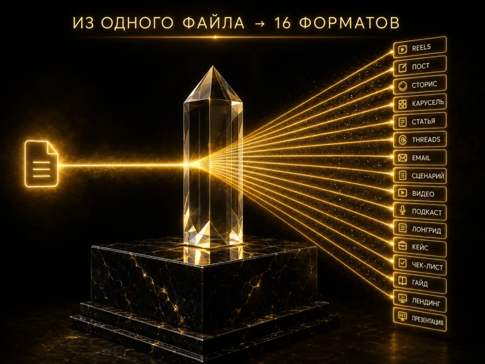

М5 Контент-маркетинг. 16 форматов контента
- Ключевой навык: строить осознанную систему контента под запуск
ClaudeNotebookLM
РезультатСистема контента: знаешь что, когда и для кого писать. AI пишет тексты в твоём стиле — не видно, что нейросеть. 16 форматов: посты, сторис, рилсы, статьи, письма и другие. Контент перестаёт быть болью.